Pick a song and press the shutter. It records exactly one beat's length, nothing more. Fill your vlog, tap “Make video” once, and that's it. No editing afterward.
Free · No account · No server · No watermark
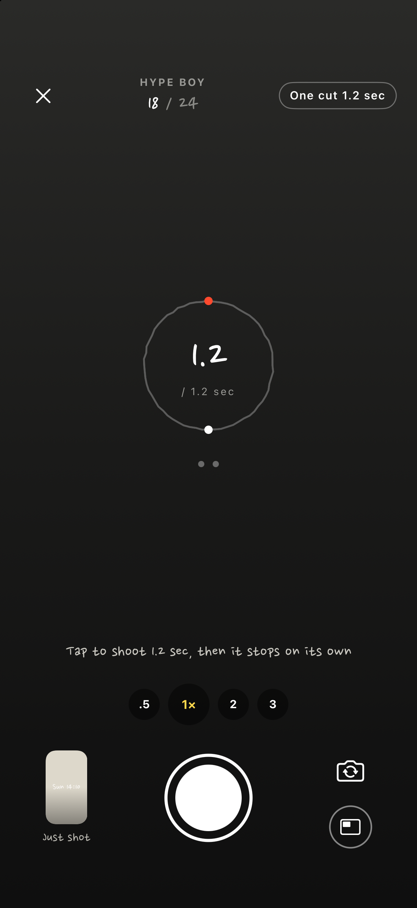
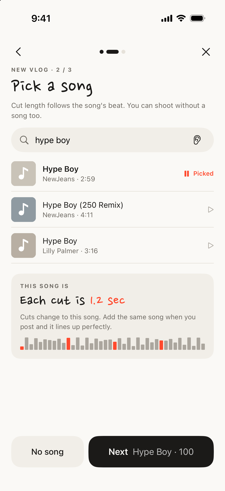
Search Apple Music and play a 30-second preview. The app measures the beat and sets the length of a cut. No subscription needed.
You feel the beat in your hand, and when the ring goes around once, the cut is done. Lenses from .5x to 3x. Turn the phone sideways for a landscape vlog.
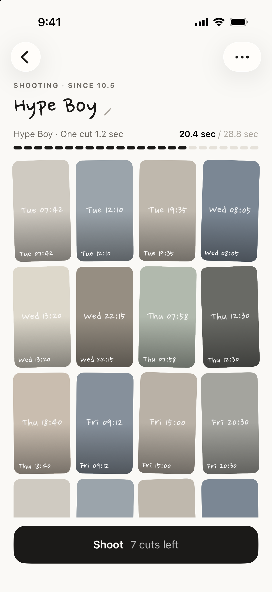
12, 24 or 36 cuts make one vlog. Shoot several at once. Finished ones gather in Collection.
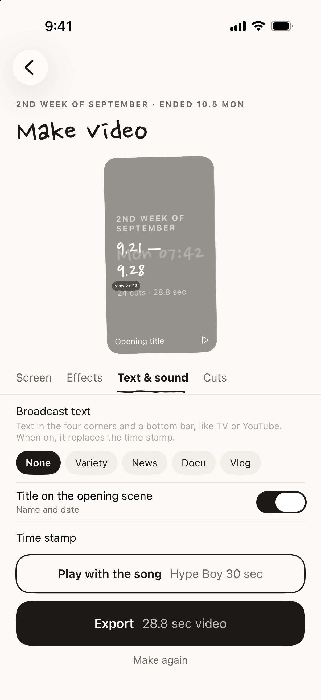
A title, the time, neighborhood and a short note on each cut, plus color and effects. Nothing gets uploaded.
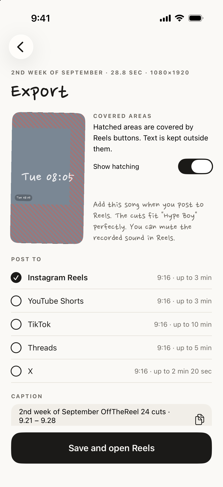
Text stays clear of the buttons on Reels, Shorts and TikTok. Save it and go straight to Reels. Add the song when you post.
Tap “Save a cut” at the top of Home to shoot a single 1.2-second cut. It lands in Saved cuts, sorted by date. Later, pick a few and turn them into a new vlog, or pull them into a vlog you're shooting from “Fill” to fill its empty slots. Cuts move over, so nothing is stored twice.
Shoot now, decide where it goes later →
Tap it on the Lock Screen, in Control Center or with the Action button, and the camera opens while your phone stays locked. When you unlock and open the app, the cut goes into your pinned or most recent vlog. No vlog yet? It goes to Saved cuts. iOS 18 or later.
On days you shoot daily, like with Today mode or the 24-Day Challenge, “DAY 9 · Not yet today” shows on the Lock Screen and in the Dynamic Island. It updates as soon as you shoot and clears at midnight.
On each beat the picture leans in a touch, brightens a little, or drifts slowly sideways across a cut. Every effect is back at rest when the cut changes, so nothing jumps. In Make video › Effects, Soft or Normal.
Choose 한국어, English or 日本語 in Settings › Language. By default it follows your phone. Dates and Broadcast text in your video follow the language too.
Turn on the Front & back button on the camera screen and one press of the shutter shoots both. With Together on one screen, your selfie sits small in the top left of the back camera view, where Reels text won't cover it. In Make video you can switch to Half & half or Back only.
As two cuts fills two slots per press: one back cut, then one selfie cut. A 12-cut vlog fills up in six presses. It works in landscape vlogs too, and for retakes you choose Back, Selfie or Front & back.
One press, both sides →
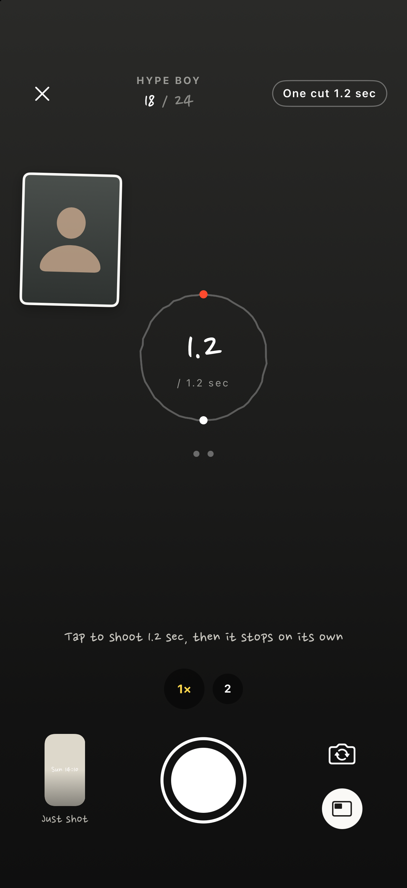
Front & back · Camera
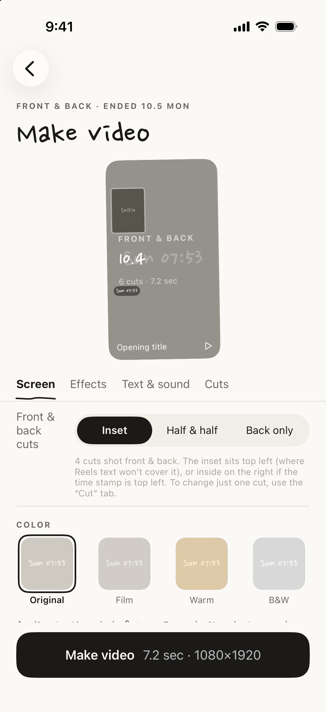
Layout · Make video
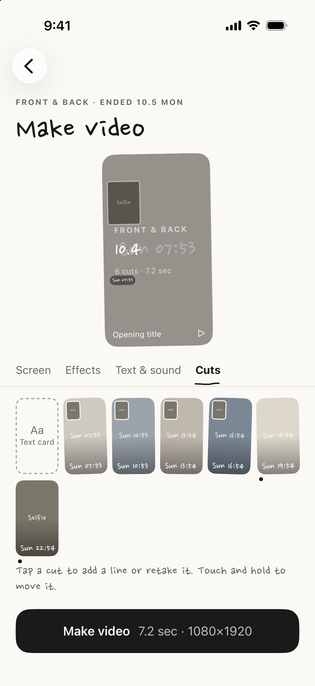
Front & back cuts · Cut list
Put the One cut button on the Lock Screen, in Control Center or on the Action button, and one tap takes you straight to the camera. The cut goes into the vlog you shot last. Tap the name at the top to switch vlogs. Tapping a reminder takes you straight to the camera too.
Each day you shoot shows up as that day's first cut in this week's seven squares and this month's calendar on Home, and in Collection as a 1-year activity grid. You can also put the calendar on your Home Screen as a widget.
One cut in two taps →
Quick shoot · From the Lock Screen
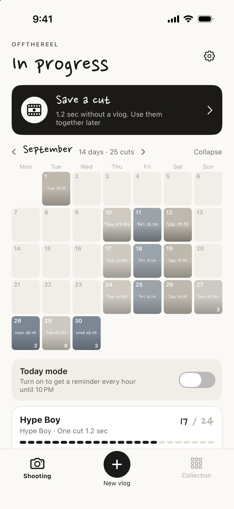
This month's calendar · Home
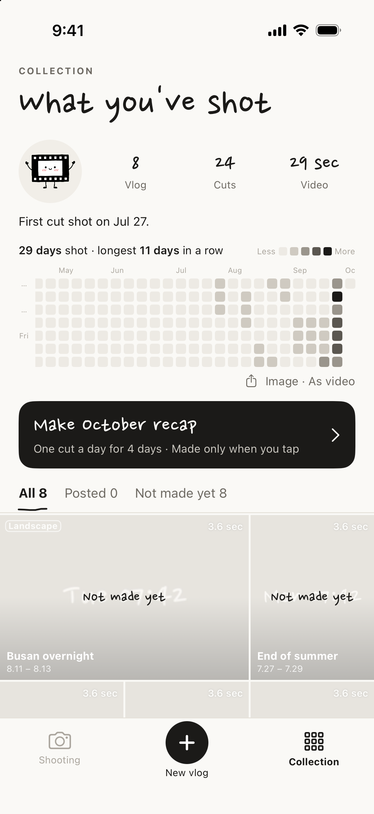
1-year grid · Collection
Tap Make September recap in Collection and the month's cuts come together, one per day, in a single video. Use each day's first cut, last cut or morning cut, or pick them yourself, and set one beat from a song or by tapping. Choose As a calendar and each day's cut pops up big for a beat, then drops into its square, ending on a full calendar.
Between clips, add a Text card with just words on a color or photo. On screen, add Broadcast text styled like a variety show, the news, a documentary or a vlog, in the four corners and a strip along the bottom. Save the 1-year grid and this month's calendar as story-size images, and the grid filling up from January as a 6-second video.
Made only when you tap →
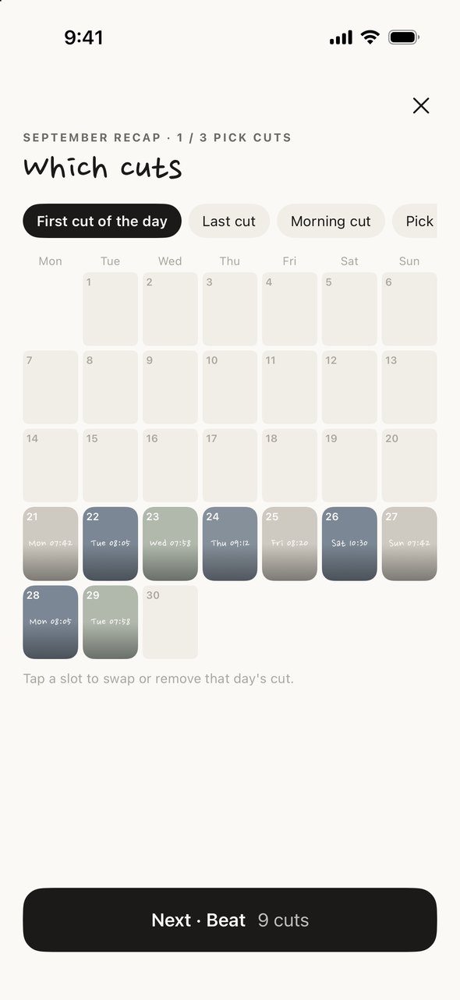
Month recap · Picking
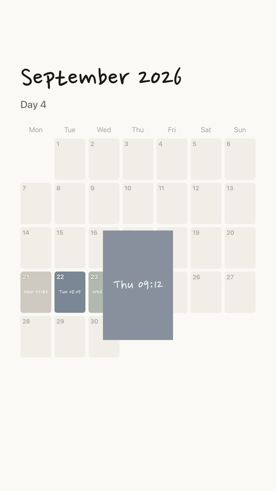
As a calendar · Finished video
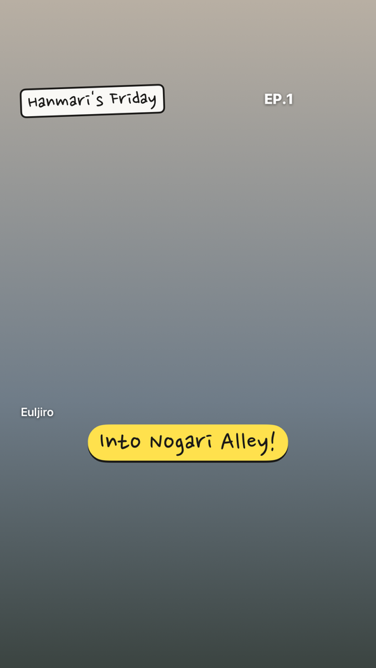
Broadcast text · Variety style
Choose the inside of a box you draw by hand, the person, or the background, and the color look goes only there. Make just the background black and white and only the person stays in color.
Borders come in Hand-drawn, Paper or Film. The time stamp can show the weekday, the date, a camcorder readout or the day count, and you can add the neighborhood and a handwritten note.
Three real videos made in the app →

Hand-drawn · Default

Paper · Like a pasted photo

Film · Strip and holes
There's no timeline to drag and trim. The beat sets the length of each cut. You just shoot.
Fill 12, 24 or 36 cuts and it's one vlog. Not a drawer of clips that piles up forever.
No account, no server. The internet is used only to search for songs. Your cuts and videos live on this phone and in Photos, nowhere else.
It's free, and nothing gets stamped on the videos you export.

Its body is a single frame of film. It only shows up when nothing is being shot, while your video is being made, and when it's done. Never on the camera screen. It would get in the way.
No. The Apple Music preview is used only to measure and check the beat. Your video comes out silent or with the sound you recorded, and you add the song when you post to Reels or Shorts. The cuts already sit on the beat, so it lines right up.
No. Search and 30-second previews work without one.
It's set by the beat of the song you pick. On “Normal”, a mid-tempo song gives about 1.2 seconds. There's also Fast and Easy. Without a song, it's 1.2 seconds.
Once per cut. Tap a cut and choose “Retake”. If you don't like the new one, you can go back to the previous cut, and cleared cuts can be restored for 30 days. Press and drag to change the order.
Yes. Choose “Landscape” when you create a new vlog, shoot with the phone sideways, and make a landscape video or a landscape video inside a vertical frame.
If you turn it on. It's off at first. When it's on, it checks your location only when you press the shutter and adds a neighborhood name like “Williamsburg”. Coordinates never leave your phone.
Get a reminder at set times every day, or turn on Today mode for a nudge every hour. There are Home Screen and Lock Screen widgets too.
No. A month recap points to the cuts in your original vlogs. No files are copied, and deleting the recap leaves the original cuts in place.
Yes. Tap the ear button in Pick a song and it listens for a few seconds to recognize the track (Apple ShazamKit). It uses the mic only when you tap, and it doesn't save the sound.
Yes. In “Fill from Photos”, pick Live Photos or videos you already shot, and the steadiest moment comes in as a cut.
On the camera screen, tap the Front & back button under the flip button and choose “Together on one screen” or “As two cuts”. Each vlog remembers your choice. In Front & back, zoom goes up to 2x, and the button appears on iPhones that can run both cameras at once (XS and later).
On iOS 18 or later, touch and hold the Lock Screen, tap “Customize”, tap the flashlight or camera spot at the bottom, and pick “OffTheReel · One cut”. You can also put it in Control Center and on the Action button (iPhone 15 Pro or later). The steps are in the app under Settings > Quick shoot.
Nowhere. Your cuts stay in the app and in the “OffTheReel” album in Photos (you can turn that off), and finished videos are saved to Photos only when you tap Export. Privacy Policy